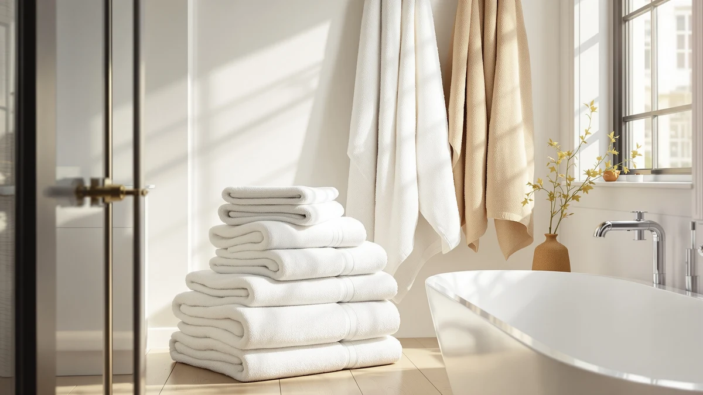

White Bath Towels vs Colored: Which Is Better? (2026)
Prices and picks verified as of September 2026. Independent, reader-supported reviews.


Things to Know Before You Buy
- White cotton towels tolerate chlorine bleach; colored towels need color-safe oxygen bleach instead, which is slower on tough stains.
- Colored towels typically show visible fading within 40 to 60 wash cycles, while white towels dull to gray but recover with a bleach soak.
- Price differences track cotton weight and brand, not color. A 700 GSM white towel and a 700 GSM colored towel from the same maker usually cost about the same.
- White towels show hair, makeup and body oil stains more visibly than dark or patterned colors, even though both stain at the same rate.
- Vacation rental hosts and hotels default to white because it is easy to bleach and easy to restock in a matching batch years later.
White bath towels vs colored is one of the first decisions you make when you restock a bathroom, and it matters more than most shoppers expect. Owners who bleach their towels regularly gravitate toward white, while reviewers who prioritize a coordinated bathroom look tend to favor colored sets, and the right call depends on how you actually do laundry.
This guide compares white and colored bath towels on durability, price, stain visibility and day-to-day upkeep, using verified owner reviews and manufacturer specs rather than physical product testing. Neither option is universally better. White towels win on hygiene and long-term replaceability, and colored towels win on hiding daily wear and matching a room's design.
Quick Answer
For most households, white bath towels are the more practical pick because they can be bleached, they never clash with a redecorated bathroom, and worn-out towels are simple to replace with an identical match. Choose colored towels instead if you want a coordinated color scheme, share a bathroom with kids or guests who leave visible stains, or don't want to deal with bleach at all. White Classic's cotton sets, reviewed below, are a solid starting point if you land on white.
What is White Bath Towels?
White bath towels are towels made from undyed or bleached cotton, most often 100 percent ring-spun or combed cotton in the 500 to 900 GSM range. Because there's no dye to protect, manufacturers can finish white towels with harsher processing and buyers can wash them with full-strength chlorine bleach without damaging the fabric. That single property drives most of their appeal: a stained or grayed white towel goes back into a bleach cycle and comes out looking close to new, which is why hotels, spas and rental properties standardized on white decades ago.
The tradeoff is visibility. Every hair, streak of foundation or splash of hair dye shows up immediately against white cotton, and owners who don't bleach regularly find their towels going gray within a few months. White towels also read as more clinical or hotel-like than colored ones, which some buyers like and others find sterile. In verified buyer reviews, white towels feel identical in hand to their colored counterparts from the same manufacturer. Color has no effect on absorbency or softness; it only changes what you can clean them with and how visible the wear is.
What is Colored?
Colored bath towels are the same cotton construction as white towels, dyed in solid shades, patterns or heathered blends during manufacturing. The dye process is the entire difference: colored towels are more sensitive to bleach, hot water and sunlight because those all accelerate dye loss, so care labels for colored towels usually call for cold or warm water and color-safe detergent instead of chlorine bleach.
What colored towels give up in bleachability, they make up for in camouflage and design flexibility. A charcoal or navy towel hides hair, lint and light staining that would be obvious on white, which matters in households with kids, pets or shared bathrooms. Colored towels also let you match a bathroom's palette in a way plain white can't, and owners researching color options report that darker, saturated colors hold their tone longer than pastels, which fade visibly faster under the same wash routine. If a coordinated look matters more to you than bleach compatibility, colored is the more forgiving daily-use option.
Head-to-Head: Build Quality & Durability
Cotton weight and yarn construction, not color, determine how long a towel lasts structurally. Ring-spun and combed cotton towels in the 600 GSM-plus range resist pilling and thinning regardless of whether they're white or dyed, and both the White Classic sets and the Superior Egyptian cotton towel compared here use comparable weights. In this white bath towels vs colored matchup, the real durability gap shows up in appearance rather than structure.
White towels lose their crisp look through graying, caused by mineral buildup, detergent residue and body oils accumulating in the fibers over repeated washes. That graying is reversible with an oxygen or chlorine bleach soak, so a five-year-old white towel can look close to new after one aggressive wash. Colored towels lose their look through dye fade, which is not reversible. Once color pulls out from UV exposure or hot water, no wash cycle brings it back. That's why white towels tend to last longer in practice: their main wear issue can be undone, while a faded colored towel just keeps fading.
Head-to-Head: Price & Value
Across the products compared here, white and colored towels land in a similar price band once you match cotton weight and brand. The White Classic six-piece white set runs $39.99, the American Soft Linen colored four-pack also runs $39.99, and the Aston & Arden colored Egyptian cotton towel sits at $42.99, close to the $44.99 premium White Classic option. Color itself doesn't drive the price; fiber quality, GSM and brand positioning do.
Where value actually diverges is replacement cost over time. A white towel set can absorb years of bleach cycles and keep matching, so you rarely need to buy a full replacement set to restore its appearance. Colored sets fade unevenly since not every towel in a set gets identical sun and wash exposure, and once one towel visibly fades ahead of the others, most owners replace the whole set rather than live with a mismatch. Over a five-year span, that pushes total cost of ownership slightly higher for colored towels even when the sticker price is the same.
Head-to-Head: Use Experience
Day to day, the experience gap between white bath towels vs colored comes down to what you notice in the bathroom. White towels show everything: a smear of self-tanner, a kid's muddy hands, a pet's paw prints. That visibility is useful if you want to catch stains early and bleach them out before they set, but it also means white towels look "used" faster even when they're perfectly clean.
Colored towels, especially in medium to dark shades, hide the same marks and stay presentable longer between washes, which owners with young kids or shared households cite as the main reason they stick with color. The downside surfaces in the laundry room: colored towels can't go in a load with light-colored clothing without a dye-transfer risk on the first few washes, and new colored towels shed loose dye and lint noticeably more than white towels during the first several washes. If you want a towel that stays looking fresh between washes without extra laundry sorting, colored has the edge. If you want a towel that's easy to fully reset with a deep clean, white wins.
When to Choose White Bath Towels
Pick white bath towels if you already bleach your linens regularly or want the option to. They're the practical choice for guest bathrooms, rental properties, and any household that wants an easy way to keep towels looking hygienic without inspecting each one for stains. White is also the safer long-term choice if you tend to buy towels a few at a time rather than as a matched set, since white cotton stays in stock as a standard product across most retailers and brands, making it far easier to add a matching towel years after your original purchase.
White also suits anyone who prioritizes function over decor. If your bathroom palette changes with your decorating mood, white towels never clash with a new color scheme, and they photograph cleanly for anyone who cares how a bathroom looks in listing photos or on social media. The one real commitment is upkeep: get comfortable running an occasional bleach cycle, or white towels will gray faster than colored towels dull.
When to Choose Colored
Choose colored towels if your household includes kids, guests, or anyone who reliably leaves visible marks on a towel, since medium and dark shades absorb that daily wear without looking dirty. Colored towels also make sense if you've already committed to a bathroom color scheme and want the towels to read as part of the design rather than a neutral afterthought.
Colored is also the better fit if you don't want to manage bleach at all, whether that's a fabric-care preference or a household with delicate skin sensitive to bleach residue. The tradeoff is planning for replacement: buy an extra towel or two from the same dye lot up front if you can, since matching a faded colored towel to an older set gets harder every year as manufacturers rotate their color offerings.
Our Top Picks
If you've decided white is the better fit for your bathroom, these three White Classic options cover the main use cases: a complete starter set, a single best-value towel, and a heavier premium pick.

Editor’s Pick
Luxury White Bath Towel Set
A complete six-piece set that covers bath towels, hand towels and washcloths in one order, sized for a full bathroom restock.
$39.99
Check Price on Amazon
Best Value
White Classic Luxury Bath Towel
The lowest per-towel cost of the three, a straightforward ring-spun cotton towel for buyers who want to add towels individually.
$39.99
Check Price on Amazon
Premium Choice
White Classic Luxury Bath Towels
A heavier weave for buyers who want a plusher, hotel-style white towel and don't mind paying a few dollars more for it.
$44.99
Check Price on AmazonFrequently Asked Questions
Do white towels stay cleaner than colored towels?
White towels do not resist stains any better than colored ones, but they let you bleach out mildew, makeup and body oil without worrying about the dye fading. Colored towels look cleaner between washes because stains and lint blend into the pattern.
Which fades faster, white or colored bath towels?
Colored towels fade first, usually within 40 to 60 washes, as dye lifts out with detergent and sunlight. White towels do not fade the same way. They dull to gray from mineral buildup and product residue, but that dulling reverses with an oxygen bleach soak.
Can you use bleach on colored bath towels?
Regular chlorine bleach strips color and leaves blotches on dyed towels, so avoid it. Oxygen-based, color-safe bleach works on colored towels, though it lifts stains more slowly than chlorine bleach does on white cotton.
Are white or colored towels better for resale and rental properties?
Property managers and Airbnb hosts lean white for a reason: white towels are easy to bleach between guests and easy to replace in matching batches years later, since white cotton is a standard SKU most retailers keep in stock.
Do colored towels cost more than white towels?
Price differences come down to brand and cotton quality more than color. Comparable weights from the same manufacturer are usually priced within a dollar or two of each other whether you buy white or colored.
Final Verdict
White bath towels vs colored isn't a contest with one universal winner, but for most households, white edges ahead because it can be bleached back to like-new and restocked with an exact match years later. White Classic's cotton sets deliver that practicality at a price that matches comparable colored options, which is why they anchor our picks above. Choose colored towels instead if hiding daily wear or matching a bathroom's design matters more to you than bleach compatibility.